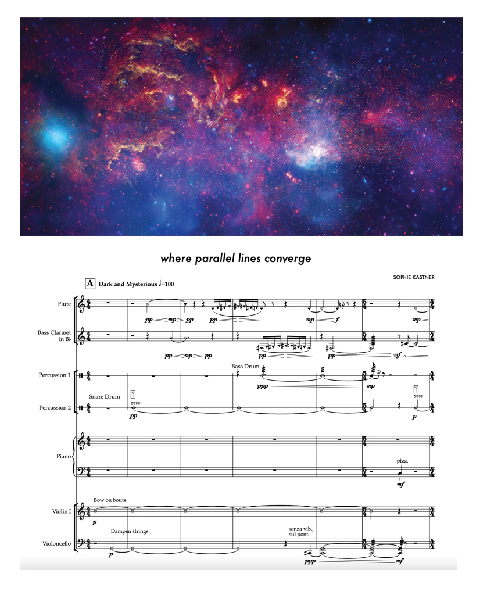

A Nova Terra
Astrônomos japoneses descobriram um planeta parecido com a Terra. Batizado de K2-415b, ele orbita uma estrela anã vermelha, a 72 anos-luz da Via Láctea (para ter ideia, 1 ano-luz equivale a 9,5 trilhões de quilômetros). A descoberta consta em estudo publicado no site Arxiv, em 1º de fevereiro. https://exame.com/
A Sinfonia das Estrelas
No processo de sonificação, os computadores usam algoritmos para mapear matematicamente os dados digitais desses telescópicos em sons perceptíveis ao ouvido humano. Mas, é claro, músicos têm capacidades (e sensibilidades) diferentes das dos computadores. Kastner optou por focar em pequenas seções da imagem para tornar os dados mais reproduzíveis para as pessoas. Isso também permitiu que ela criasse destaques em certas partes da imagem que passam facilmente despercebidas quando a sonificação completa é reproduzida. www.cnnbrasil.com.br/

LANÇAMENTO DO FOGUETE FALCON 9 - Starlink Group 7-16
A SpaceX, de Elon Musk, lançou o foguete Falcon 9 com seu primeiro conjunto de satélites da Starlink capazes de enviar sinais de telefonia do espaço diretamente para aparelhos convencionais de celular. Atualmente, a Starlink só oferece sinal para notebooks e desktop. Fonte:Space Today